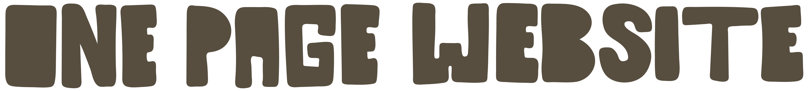
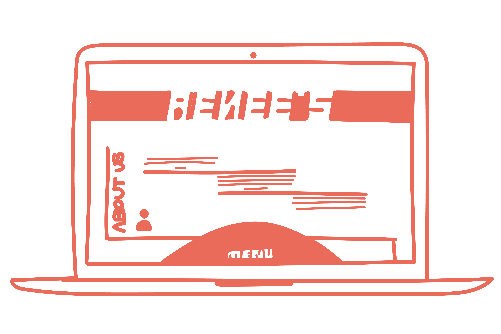
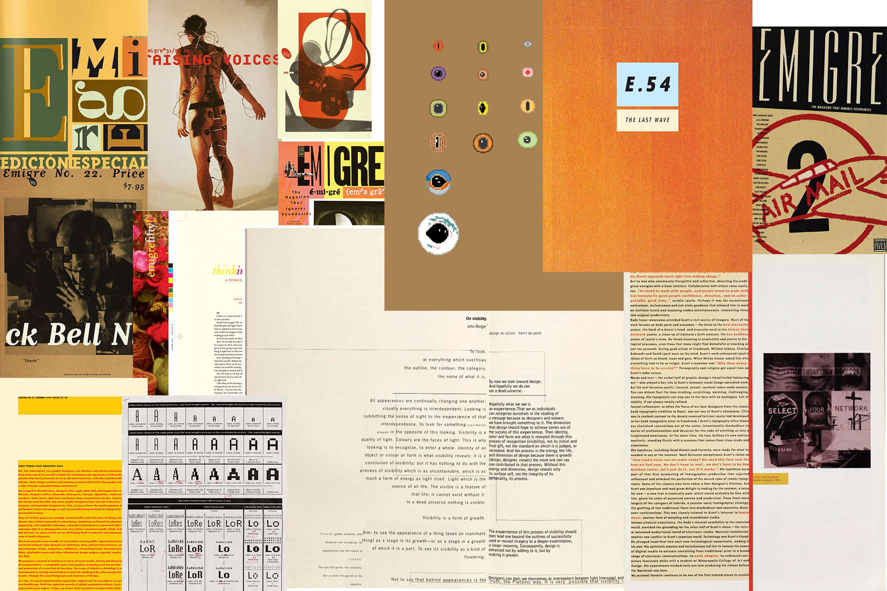
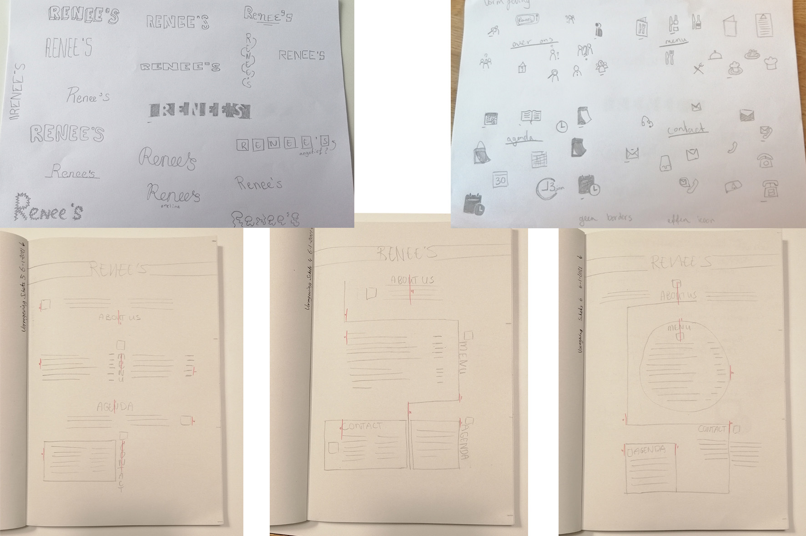
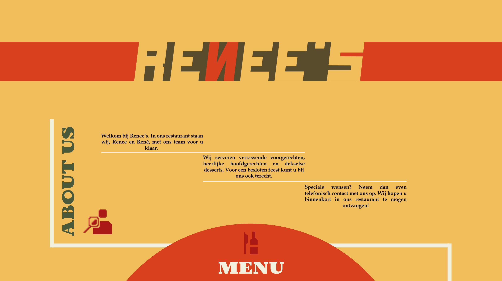
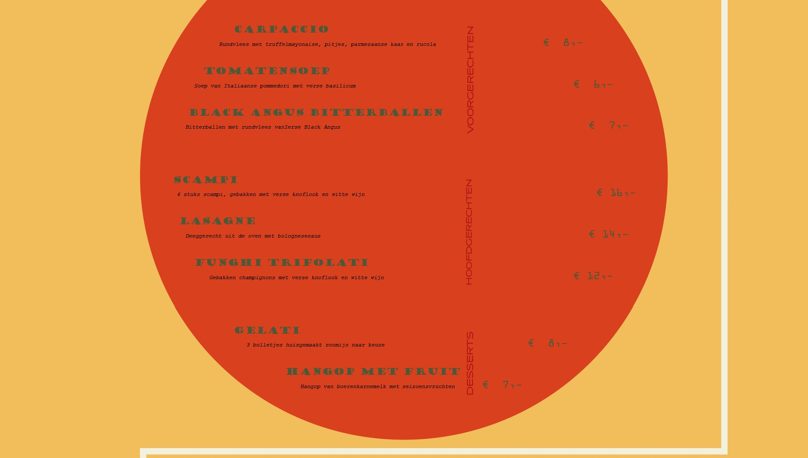
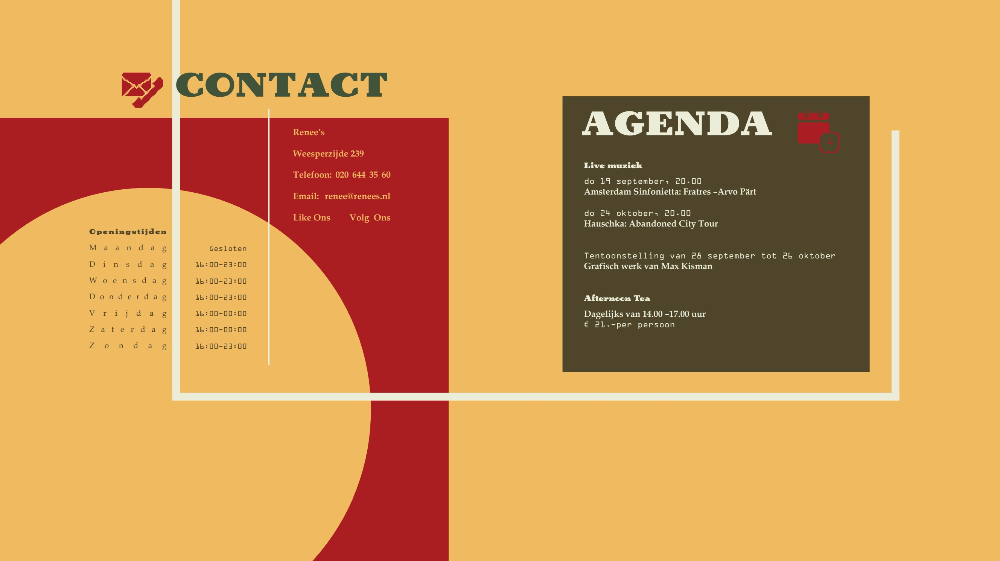

- 
- 
-
Vormgeving
Illustator
9 weken
Het is allemaal begonnen met de oprichting van het nieuwe restaurant Renee’s, gespecialiseerd in veel verschillende dingen. Echt een allround keuken waar je gezellig en lekker kan dineren.
- 
- 
Deze opdracht kwam vanuit school. Kort maar krachtig was de opdracht, maak een one page website ontwerp aan de hand van een specifieke vormgever hun stijl. Een webpagina waar alle informatie in een keer te zien zonder dat de gebruiker naar een andere pagina geleid wordt.
De vormgever die ik mocht bestuderen was het werk van Rudy van der Lans in het magazine Emigre.
Als allereerst ben ik op onderzoek uitgegaan om uit te zoeken hoe de vormgeving van Rudy in elkaar zit. Ik wilde weten welke vormgevings elementen het meest gebruikt werden en hoe deze gebruikt werden. Welke kleuren en kleurcombinaties het beste overeen zouden komen met de stijl van Rudy. Ik heb aan de hand van moodboards en onderzoek kunnen achterhalen in welke richting ik wilde gaan.
De volgende stap was gaan schetsen en bedenken hoe de One page eruit ging komen te zien. Verschillende onderdelen heb ik geschetst zoals, hoe de hiërarchie van de pagina in elkaar zou komen te zitten, hoe het logo/woordmerk eruit zou zien en welke icon stijl ik aan wilde houden. Een aantal daarvan vind u hiernaast. Door de verschillende onderdelen apart te schetsen kan je je veel meer focussen op de details, ieder ding dat in het ontwerp komt te staan is doordacht en staat er met een goede reden.
- 
- 
- 
Na 6 verschillende schetsen heb ik er een paar uitgehaald om deze te gaan digitaliseren. Met behulp van Illustrator heb ik veel uren zitten wikken en wegen hoe ik het beste de inspiratie van de vormgeving van Rudy kon terug laten komen. Eigenlijk had ik bij bijna ieder ontwerp geen goed gevoel. Hierdoor heb ik een aantal versies verder uitgewerkt en advies gevraagd aan de docent. Hij gaf duidelijke feedback over alle ontwerpen en gaf mij het advies om verder te werken met 1 ontwerp.
Uiteindelijk ben ik geëindigd bij bij het ontwerp die u hiernaast kan zien. Het is een ontwerp waar de gebruiker onbewust door de hele pagina geleid wordt, door de witte lijn waar geen eind aan lijkt te komen. Dit is een van die elementen, het ander element is de grote, rode cirkel in het midden van de pagina. Het topje van de cirkel zie je al verschijnen als je voor het eerst op de site komt. Door de rode kleur van de cirkel nog meer op en staat daarmee centraal op de pagina.
Een van de dingen waar ik het meeste van heb geleerd is, zodra je niet tevreden bent met een ontwerp is het een goed idee om zoveel mogelijk andere versies maken, of dat nou in de juiste stijl is of juist niet. Hierdoor worden je gedachte verzet van proberen de juiste onderdelen aan te passen aan je huidige ontwerp naar het bedenken van volledig nieuwe ontwerp.